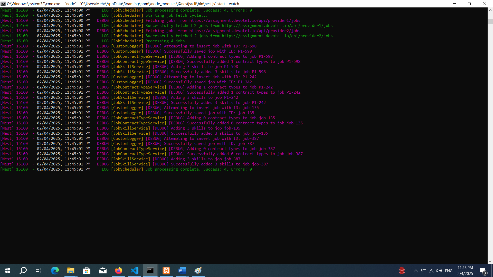
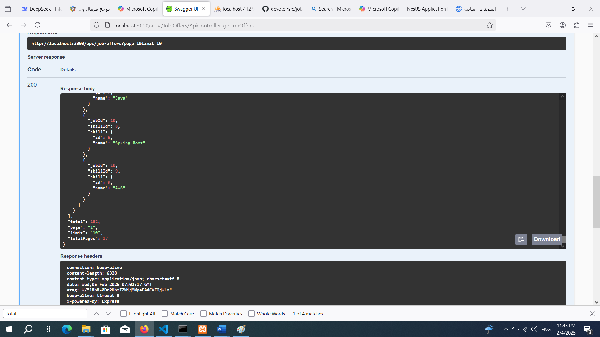
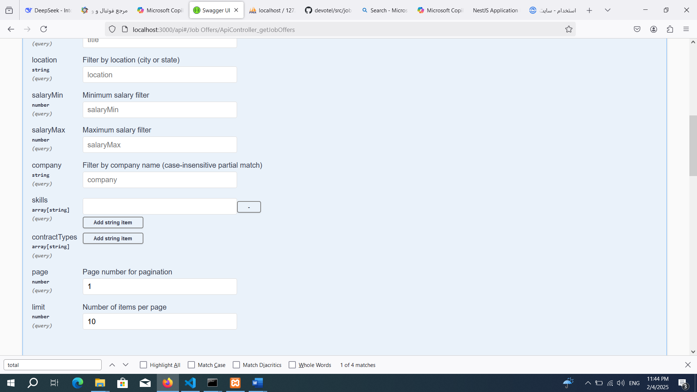
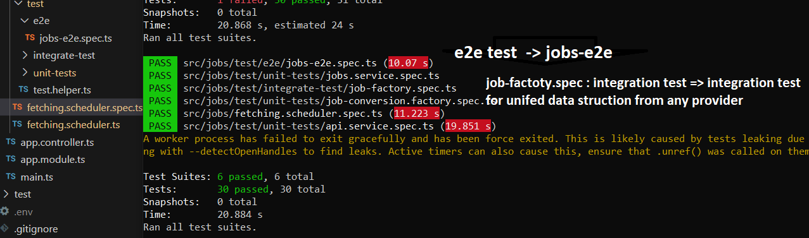

NestJS Application Deployment Guide
Installation and Setup
1. Install XAMPP and Run MySQL
- Download and install XAMPP from the official website.
- Start the MySQL service from the XAMPP control panel.
2. Install Dependencies
- Open a terminal and navigate to the root directory of your NestJS application.
- Run the following command to install the necessary packages:
npm install3. Environment Configuration
- Rename the
.env.examplefile to.env:
mv .env.example .env4. Start the Application
- Run the NestJS application with the following command:
nest start- If you encounter issues, you may need to install the Nest CLI:
npm install -g @nestjs/cli5. Testing the Application
- Run the test suite with the following command:
npm run testApplication Architecture
Factory Strategy
The application employs a factory strategy to fetch data from various APIs, refactor the data into a unified structure, and insert it into the database.

TypeORM Integration
The application uses TypeORM to interact with the database. Configuration details, including database connections and providers, are specified in the .env file.
Services
Job Service
Responsible for inserting data into the database while preventing duplicate entries.
API Service
Connected to the API controller to fetch data based on pagination and filtration criteria. This controller is documented using Swagger.
 Testing Strategy
Scheduler Fetch Test
Testing the fetch scheduler with mock data.
Conversion Strategy Test
Testing the conversion strategy for both providers with two sets of mock data.
Integration Test
Building an integration test to convert a provider's response into a unified format suitable for database insertion.
Unit Tests
Two unit tests for both the API service and the job service.
End-to-End Test
Conducting an end-to-end test by inserting data into the service controller in a unified format and fetching data from the API controller with pagination and property checks.
